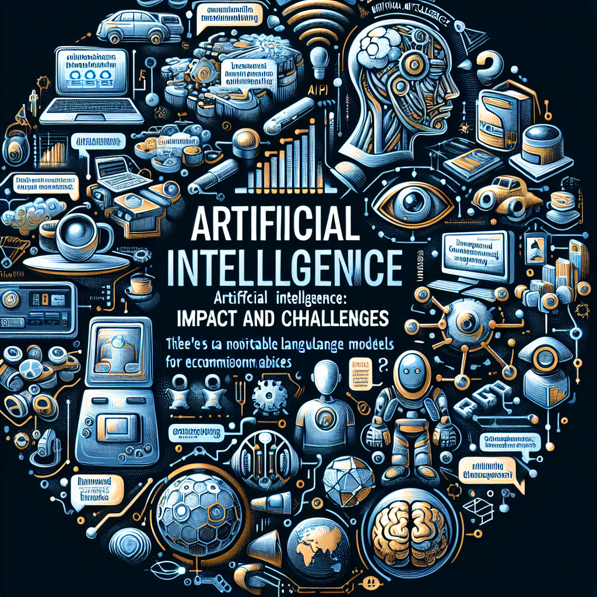
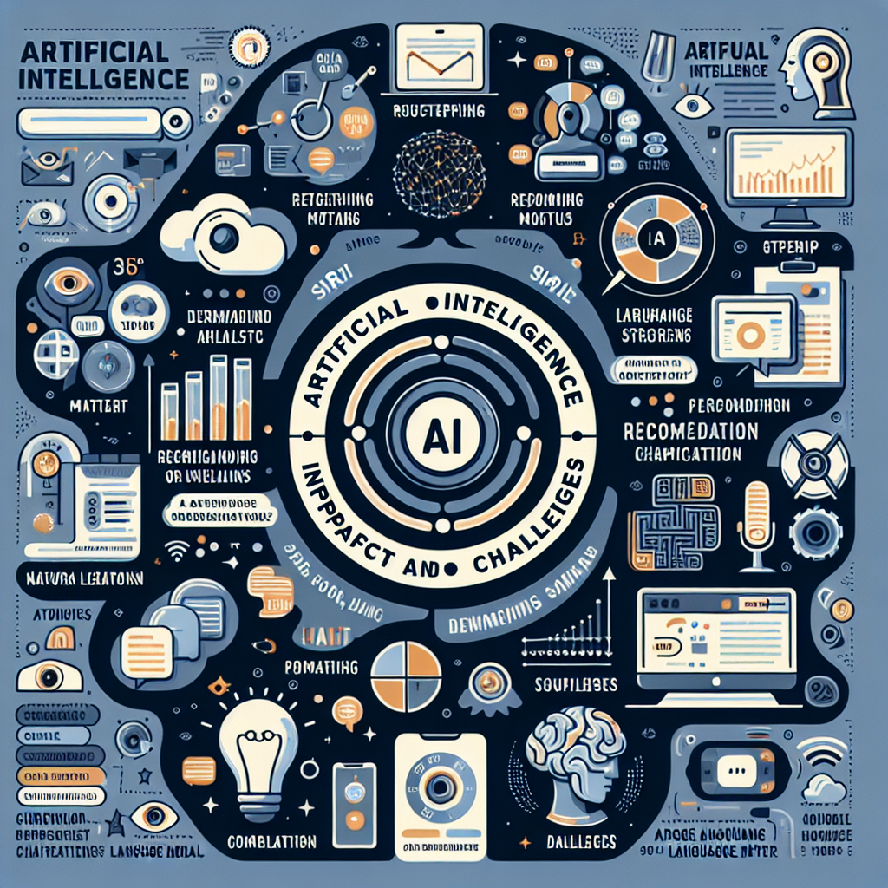

Sztuczna inteligencja to dziedzina nauki i technologii zajmująca się tworzeniem maszyn i programów zdolnych do wykonywania zadań wymagających ludzkiej inteligencji, takich jak uczenie się, rozumienie języka naturalnego i podejmowanie decyzji. AI stała się integralną częścią naszego codziennego życia, od asystentów głosowych w smartfonach, jak Siri czy Google Assistant, po systemy rekomendacyjne na platformach streamingowych, takich jak Netflix czy Spotify. Wspiera nas w planowaniu tras, automatyzacji domowych urządzeń oraz w komunikacji. Obecnie jest o niej bardzo głośno chociażby za sprawą dużych modeli językowych, jak ChatGPT.
Tutaj można umieścić dodatkowe informacje lub treść artykułu.
